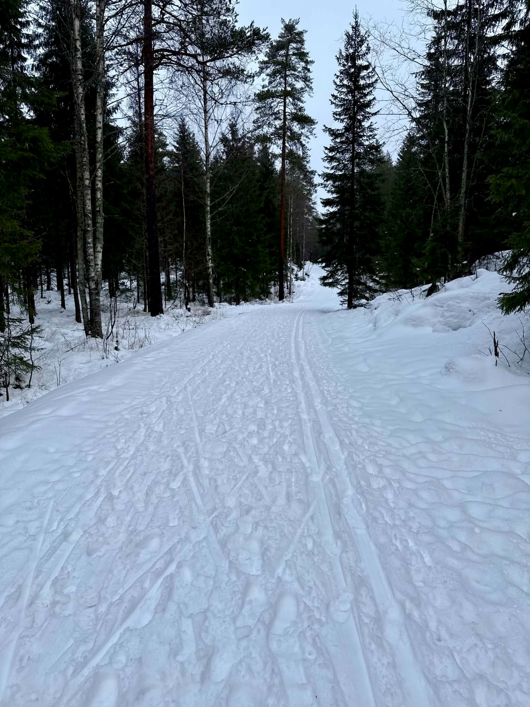

Besseggen is the most famous mountain hike in Norway — a narrow ridge between Lake Gjende (bright glacial green, 984m) and Lake Bessvatn (deep blue, 1,373m), with 389 metres of open water between them. The visual contrast is one of the most extraordinary sights in all of Scandinavia. We drive you there from Oslo and guide you across it.
We head north from Oslo in the early morning, reaching Gjendesheim at the entrance to Jotunheimen National Park after about 3.5 hours. The hike begins with a boat across Lake Gjende to Memurubu — a 45-minute crossing through one of Norway's great wilderness landscapes. From there the trail climbs steeply to the ridge. Once on top, the path follows the narrow spine above both lakes, with the vast scale of Jotunheimen opening out in every direction.
The descent returns along the lakeshore to Gjendesheim, where we drive you back to Oslo. A long day — and worth every minute of it.
Highlights
- The two-lake ridge — one of Norway's most iconic natural spectacles
- Jotunheimen National Park — Norway's great mountain wilderness
- Boat crossing on Lake Gjende at the start of the hike
- ~50,000 hikers per year — Norway's most hiked mountain route
- A completely private, guided experience at your own pace
Good to know
- ~900 m total elevation gain — a full and demanding mountain day
- The ridge section is steep and exposed — confidence on mountain terrain required
- Hiking boots with ankle support are essential
- Bring waterproofs, warm layers and enough food for a full day
- Departure from Oslo is typically around 06:00 — we'll confirm your exact pickup time on booking


Frequently asked questions
Can I do Besseggen without a car?
Without your own car, Besseggen is logistically difficult to reach from Oslo — it requires a combination of trains, buses and ferries with limited schedules. Our trip handles all the logistics: we pick you up from your hotel in Oslo and drive you directly to Gjendesheim and back.
How hard is the Besseggen Ridge hike?
We rate it Challenging. The ridge section is steep and exposed, and total elevation gain is around 900m over 6–8 hours of hiking. Confidence on mountain terrain is required. Hiking boots with ankle support are essential.
Why are the two lakes on Besseggen different colours?
Lake Gjende (984m) gets its vivid glacial green from fine glacial sediment suspended in the water. Lake Bessvatnet (1,373m) sits 389 metres higher and is a deep, clear blue — fed by different sources without the glacial sediment. The visual contrast from the ridge is one of the most striking natural sights in Scandinavia.
Is there a boat crossing on the Besseggen hike?
Yes — the classic route begins with a 45-minute boat crossing of Lake Gjende from Gjendesheim to Memurubu, where the trail up to the ridge starts. The boat crossing is included as part of the experience.
How many people hike Besseggen each year?
Around 50,000 people hike Besseggen each year, making it Norway's most-walked mountain route.